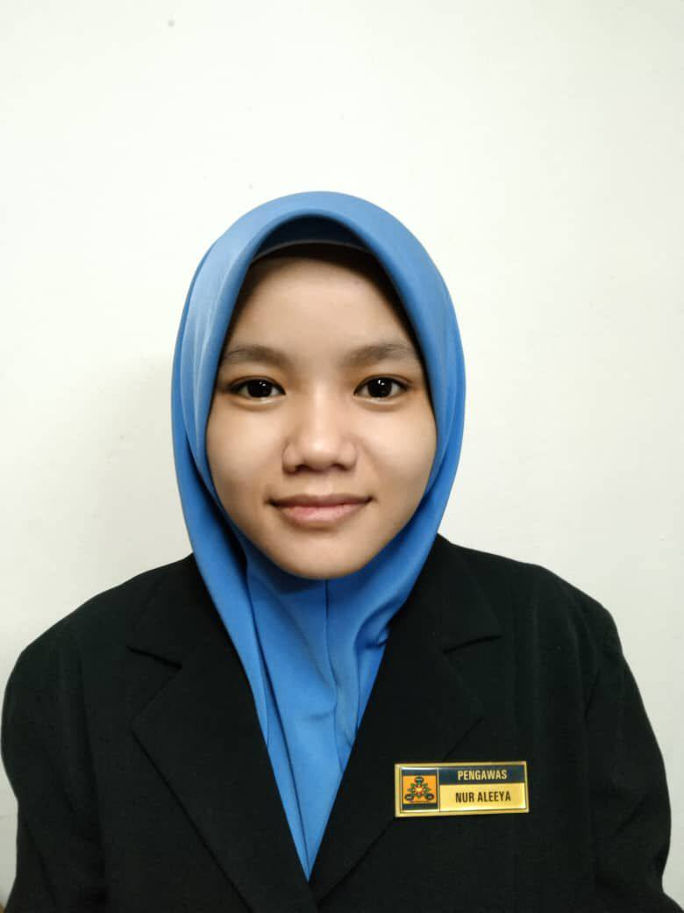
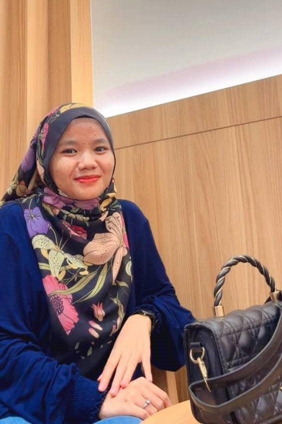

| HOME | MYSELF | EDUCATION | INTEREST | GOALS | FAMILY | FRIENDS | EXPERIENCE |
|
 |
| CONTENT |
My Personal detailsHello! My name is Nur Aleeya Sarah binti Abd. Rahman. I am 20 years old. I am from Bandar Puncak Alam, Selangor. I was born at Hospital Sungai Buloh, Selangor, on 29 October 2004. I'm currently a student studying Library and Information Science from semester 4. I have always been passionate about learning new things and taking on creative challenges. |
||
| 
|
|

|
Seventeen detailsSeventeen is a 13-member K-pop group known for their incredible self-production and teamwork. The group is divided into three sub-units: Hip-Hop, Vocal, and Performance, with members S.Coups, Jeonghan, Joshua, Jun, Hoshi, Wonwoo, Woozi, DK, Mingyu, The8, Seungkwan, Vernon, and Dino. What sets them apart is that they take an active role in creating their music, choreography, and performances. I love their creativity, talent, and dedication to delivering high-quality content, making Seventeen one of the most respected and popular groups in K-pop. Each member has a distinct charm, whether it’s their humor, leadership, or performance skills, which makes the group appealing to a wide audience. Seventeen is also admired for their humility, hard work, and the genuine bond they share as a team, which is reflected in their performances and music. |
Seventeen friendshipsSeventeen has developed strong bonds not just with each other but with their fans as well. Despite their large size, their friendship and teamwork are a key aspect of their success. They are often seen as one big family, supporting one another through their individual growth and challenges. Their friendship is especially visible in behind-the-scenes moments, where they joke around, share personal stories, and display mutual respect. The members often express their admiration for one another, whether it’s through public interviews or their interactions during rehearsals and performances. One of the most remarkable aspects of Seventeen's friendship is their balance of work and play. While they push themselves to be professional and succeed as a group, they know how to relax and have fun together. Whether it's through playful games, celebrating each other’s birthdays, or just hanging out, they continually nurture their friendship. The sincerity in their relationships creates an environment where they feel comfortable and confident, both as individuals and as a team. |
| FOOTER
E-mail: aleeyasarah4@gmail.com Instagram:sarahrahman. Phone: +6011-2105 6259 |